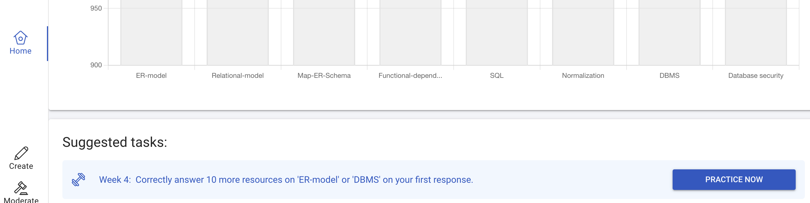
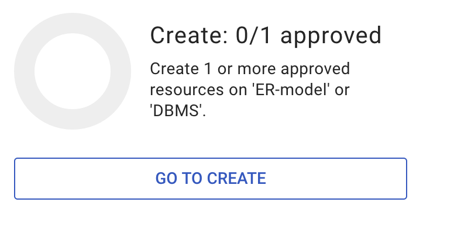
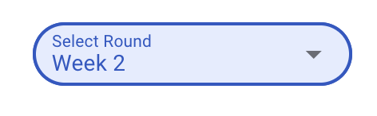

For each tasks, the questions you create, moderate or practice have to be in a specific category/ies to get the mark.
If you go to Suggested tasks then the moderation/practice tasks should give you questions in the right category. If you go to moderate/practice from the sidebar then this might not be guaranteed.
From Ripple, go to Home > scroll to bottom > Assessments. You should see something like this:
This should change to 1/1 approved (or similar) once that happens. You can also select different weeks in the top right corner of the pop-up:
Even if you do the right task, if it's completed too late then you won't get the mark for it. Do the tasks well before they're due (and the same with other assessments) in case you have internet/website issues.
Only the best 10 out of 12 weeks are counted towards RiPPLE marks. If you forget about the task once or twice, it won't affect your mark. For this reason, extensions most likely won't be granted for RiPPLE tasks.